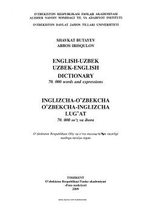

IO70 mingdan ortiq so'z va iboralarni o'z ichiga olgan ikki tilli lug'at.
Ushbu lug'at ingliz va o'zbek tillarini o'rganuvchilar hamda mutaxassislar uchun mo'ljallangan bo'lib, 70 mingdan ortiq so'z va iboralarni o'z ichiga oladi. Kitobda zamonaviy leksika va ilmiy-texnikaviyatamlar keng yoritilgan.